AI
AI 研究与多模态
持续探索 AI Agent、Computer Vision、多模态理解与 Human-AI Interaction；本科阶段参与医学图像分割，研究生阶段投稿 AI 方向论文。
AI Researcher · Full-stack Builder · Problem Solver
中国地质大学（武汉）电子信息硕士在读，本科计算机科学与技术。关注 AI Agent、AI工程化应用、前端交互与 Vibe Coding的全栈能力，把研究能力转化为可演示、可迭代、可商业化的产品原型。
考研总分，数学 125、专业课 126；研究方向聚焦 AI Agent 与多模态交互。
Interactive Resume Console
按数据实习、医学 AI、商业产品、iOS 原型、技术栈与荣誉证书组织信息，快速进入关心的经历面板。
Research · Medical AI
本科阶段参与多模态 MRI 脑肿瘤自动分割，优化多模态磁共振成像模型，改进TU-Net/Transformer架构，Dice系数提升到0.92
iOS · Personal Products
培养自身产品思维。三个方向app覆盖本地音频、睡眠周期、AI 体脂管理，体现从个人高频需求出发，用 SwiftUI 和 AI 能力打磨独立产品原型的过程。
Product · Commercial Validation
结合 LangGraph、FastAPI、本地 Markdown 记忆库和人工核验，把院校信息采集、背景分析、策略输出变成可复用工作流，在 2025 调剂季完成真实商业验证。
Proof · Honors
已整理软著、HCCDA-AI、CET-4、国家级大创、数学建模等证明材料，和研究、工程、产品经历形成互相印证的履历结构。
Internship · Data Engineering
负责微博数据采集、清洗与 ETL 流程优化，日处理数据 10 万+，完整性与实时性达 99%。工作重点包括任务调度、异常清洗、数据质量核验和结果交付。
Stack · Vibe Coding
深度学习训练、LangGraph 智能体实验和算法研究、代码学习应用等
Proof · Honors
已整理软著、HCCDA-AI、CET-4、国家级大创、数学建模等证明材料，和研究、工程、产品经历形成互相印证的履历结构。
Capability System
讲清楚算法与工程，把问题落成可操作的系统。
持续探索 AI Agent、Computer Vision、多模态理解与 Human-AI Interaction；本科阶段参与医学图像分割，研究生阶段投稿 AI 方向论文。
能快速把需求变成 Web / iOS / Agent 原型，覆盖 React、SwiftUI、FastAPI、LangGraph、OpenAI Vision 与本地工具链。
自研考研调剂 AI 系统，在 2025 年调剂季服务 500+ 咨询量并实现 6 万+ 个人营收，强调 AI 辅助采集与人工决策。
By The Numbers
Project Matrix
项目按真实经历组织：有完整详情页的项目直接展开，暂未公开的材料则用阶段性说明呈现（目前Neurips论文在投，待公开）。
面向未来人机协同场景的多 Agent 智能光标跟随桌面机器人。它把“人理解复杂界面、寻找操作入口”转变为“AI 理解任务，并用光标高亮、语音、表情与眨眼反馈引导人完成下一步”。
AI 辅助采集、人工核实决策，结合 Markdown 记忆库与自己一套完善分工skill、mcp组合拳，把单次咨询响应从 30 分钟压缩到约 5 分钟。
OnlyEar、healthy90_clock、RunningWeight，覆盖本地音频、睡眠周期和 AI 体脂管理，强调隐私、本地体验与 Agent 化。
国家级大创项目，聚焦多模态 MRI 脑肿瘤自动分割；另有阿尔茨海默病智能陪护系统并获得软件著作权。
实习期间负责微博数据采集与 ETL 优化，日处理数据 10 万+，完整性和实时性达 99%。重点体现数据工程执行、质量控制和交付意识。
用于承接研究生阶段的论文实验、Agent 系统、课程项目和远程 RTX4090 服务器训练成果。公开前先保留方向，不提前包装结果。
Skill Stack
技能栈按实际工作流组织，重点展示哪些技术能被组合成可运行系统，而不是只罗列工具名称。
Education & Experience
研究方向：人工智能相关；考研总分 379，数学 125，专业课 126。
服务 500+ 咨询量，个人营收 6 万+，形成 AI Agent + 人工决策的咨询工作流。
负责微博数据采集与 ETL 优化，日处理数据 10 万+，完整性和实时性达 99%。
核心课程包括离散数学 91、计算机组成原理 93、计算机视觉 88，并担任班级团支部书记。
Research & Honors
论文、竞赛、证书和软件著作权分开展示。未公开或待确认的内容只写可确认范围，避免把不确定信息包装成成果。
研究领域：人工智能 / 机器学习。具体内容因课题保密暂不公开，目前只展示方向与投稿状态。
参与 MathorCup 数学建模、大学生数学竞赛、国家级大创等项目，覆盖建模、算法实现、项目组织与答辩展示。
包含海默之声 V1.0 软件著作权、HCCDA-AI 华为人工智能入门级工程师证书、人工智能竞赛 等证明材料。
Certificate Cover Flow
各项比赛荣誉证书与相关证书排名不分先后
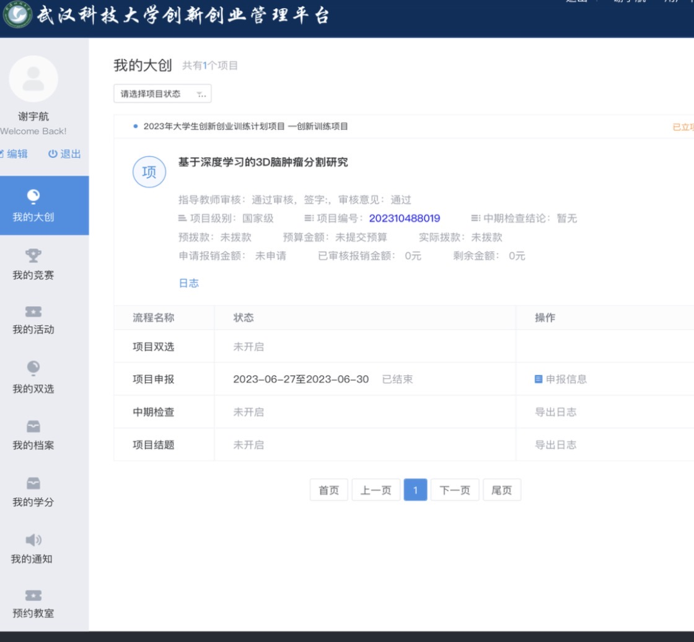
National Innovation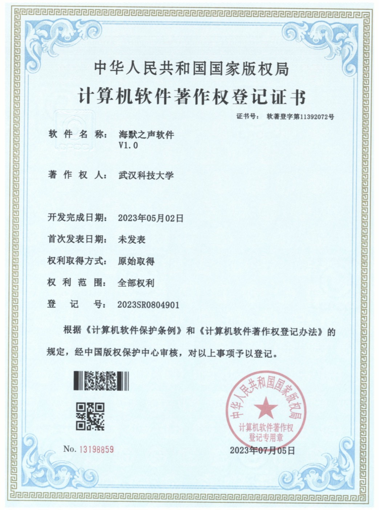
Software Copyright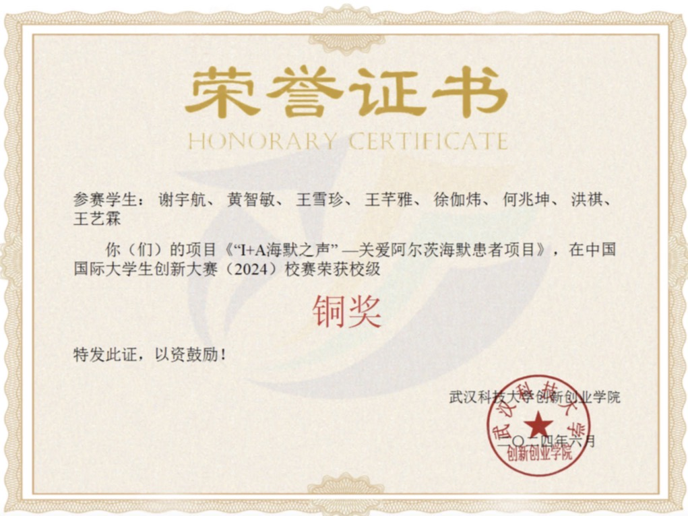
Innovation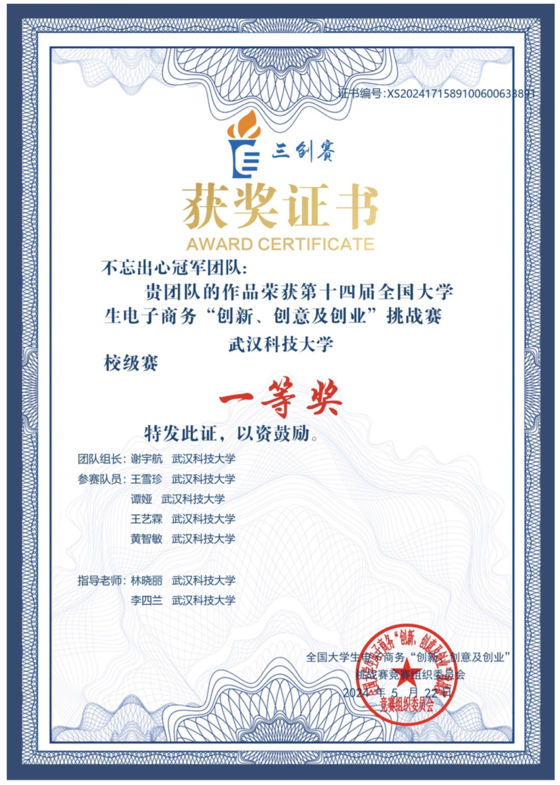
E-Commerce Challenge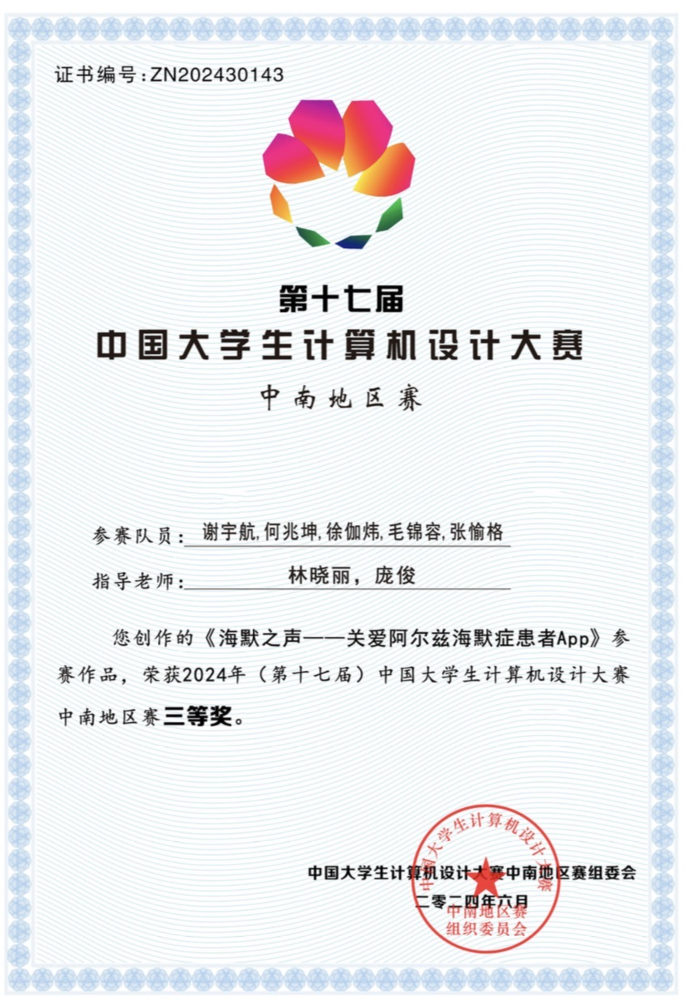
Computer Design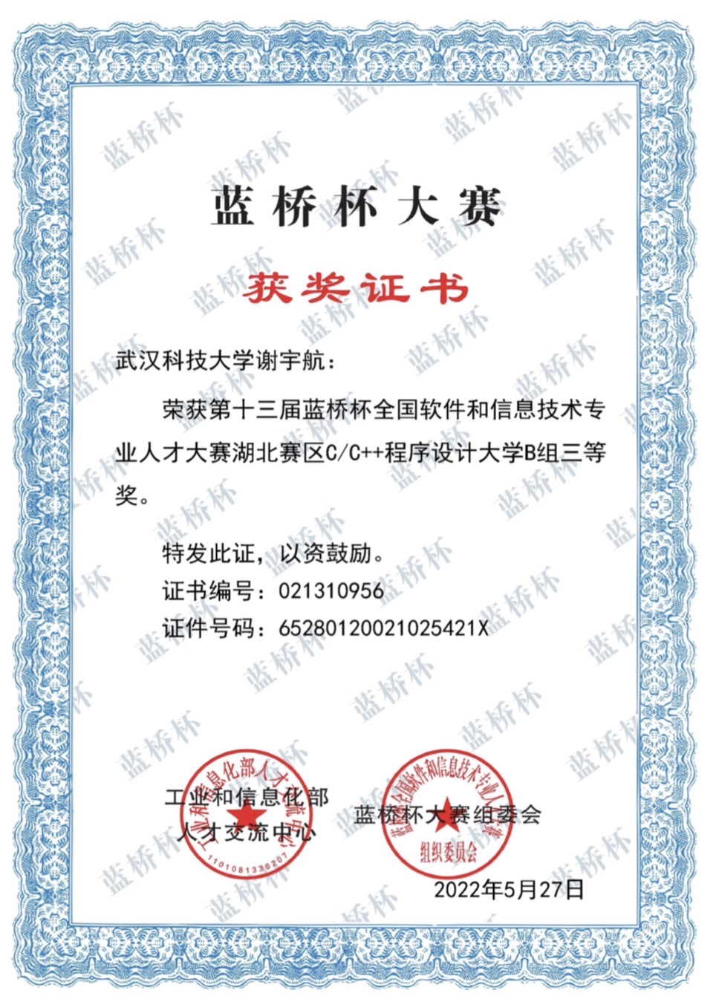
Lanqiao Cup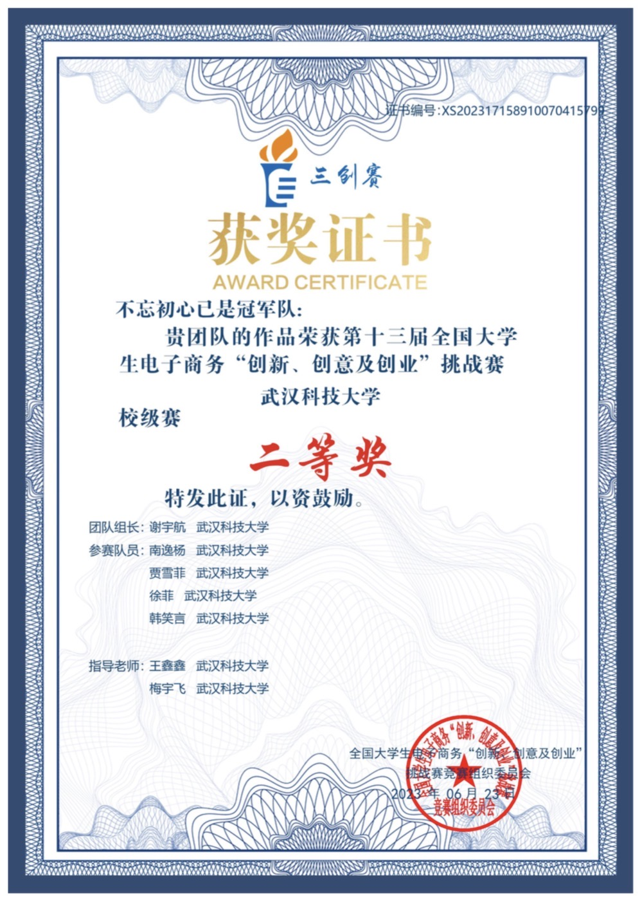
E-Commerce Challenge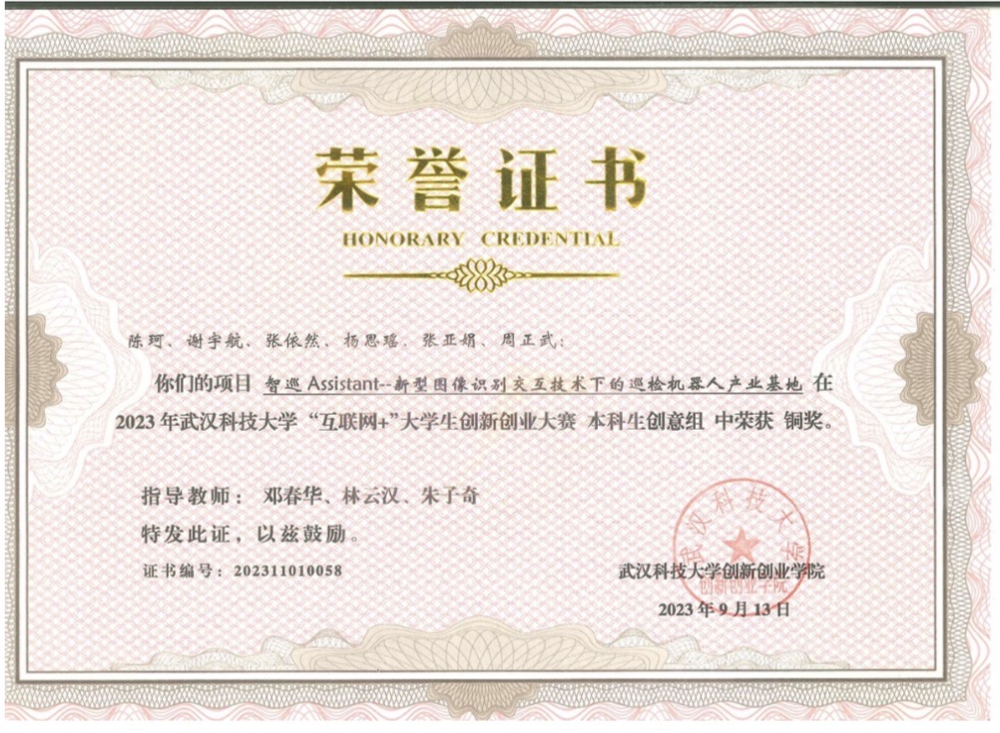
Internet Plus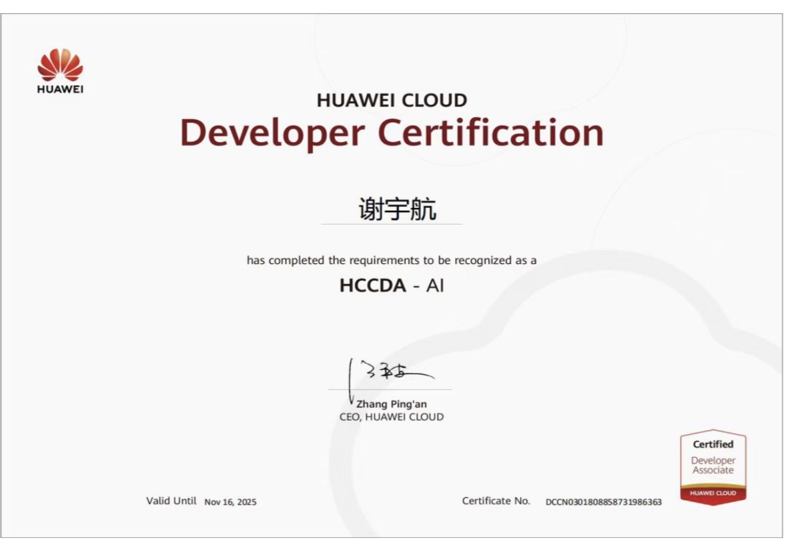
Huawei Cloud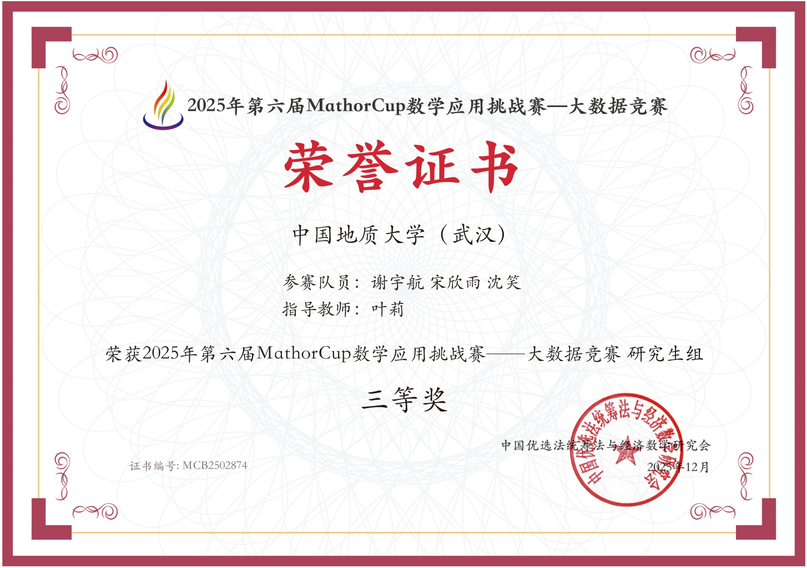
MathorCup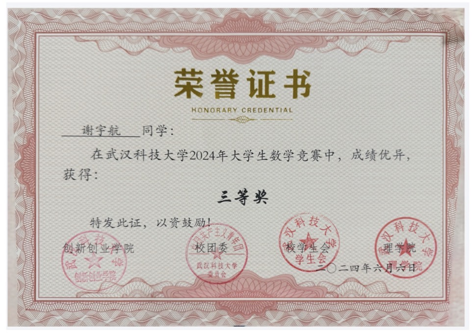
Math Contest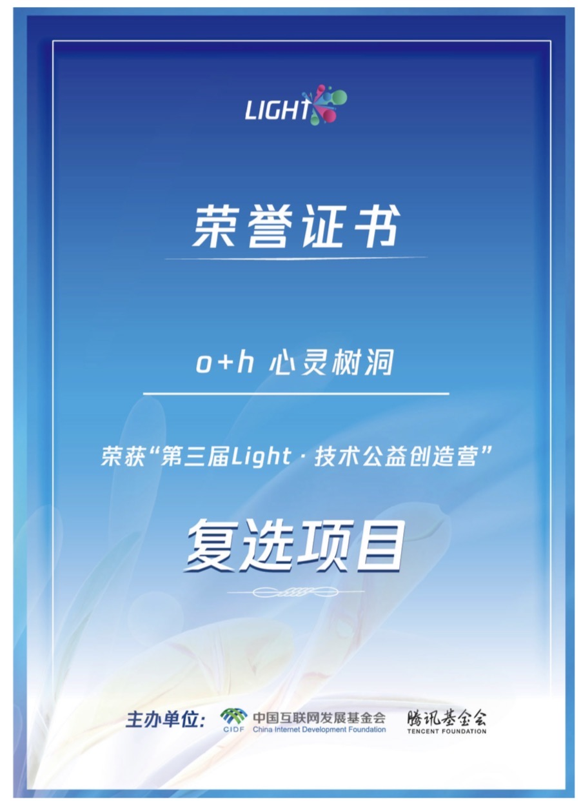
Light Camp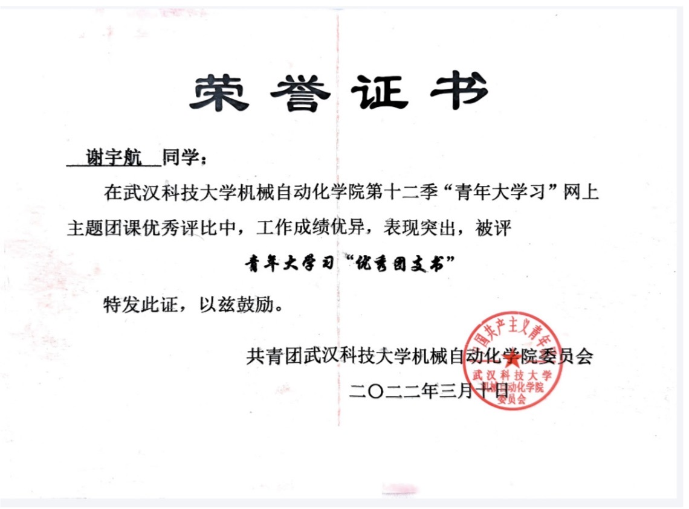
Leadership AI Award
AI Award
 SenseTime OPC
SenseTime OPC
Contact
我很想进步，如果您也想了解我如何thinking：产品、技术、idea，非常期待与您Coffee Chat。